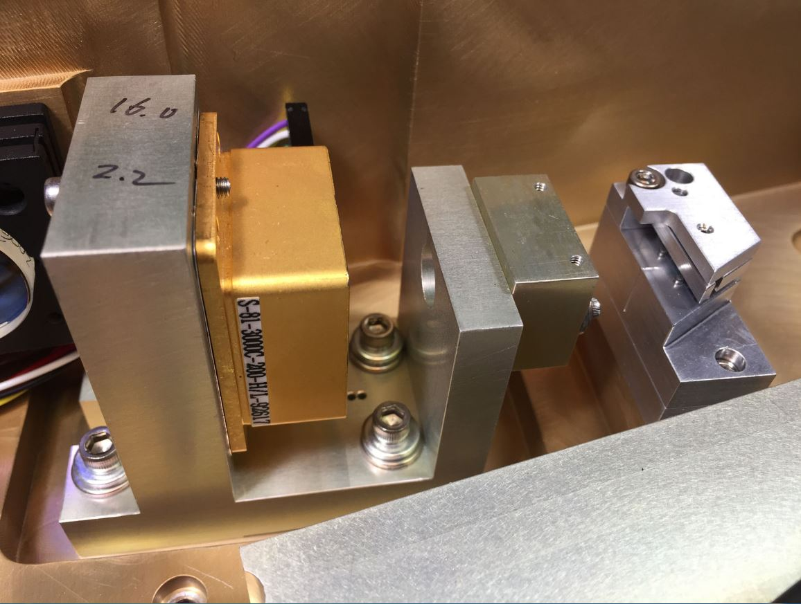

This laser head comes from an IntraLase iFS laser used in ophthalmic surgery.
This laser consists of a Yb: YAG crystal pumped by a COHERENT S-81-3000-200 type 3W single-mode laser diode. The cavity contains a polarizing blade, 5 mirrors with GVD compensation and a high-speed Pockel cell to extract energy from the cavity.
Laser is an oscillator equipped with a "cavity dumper" which allows to extract an energy of 100 to 1000 times more than a simple oscillator.
.

The cavity of a laser working in "cavity dumping" consists of 2 mirrors totally reflective.
One of these 2 mirrors may be a SESAM. So this cavity does not have an output mirror to output the light energy from the cavity. The light is totally confined in the cavity. The laser emission is manifested at the moment when the optical switching element is activated to obtain a maximum transmission (opening).
As long as the light does not escape from the cavity, the overvoltage coefficient Q is kept very high in the cavity. This is exactly the opposite in "Q-switching".
Initially, as the laser begins to oscillate, the optical energy in the cavity increases as an electromagnetic wave (all light is stored in the cavity).
A component called cavity dumper which is placed in the cavity is activated by an HT signal which allows the electromagnetic energy stored in the cavity to exit.